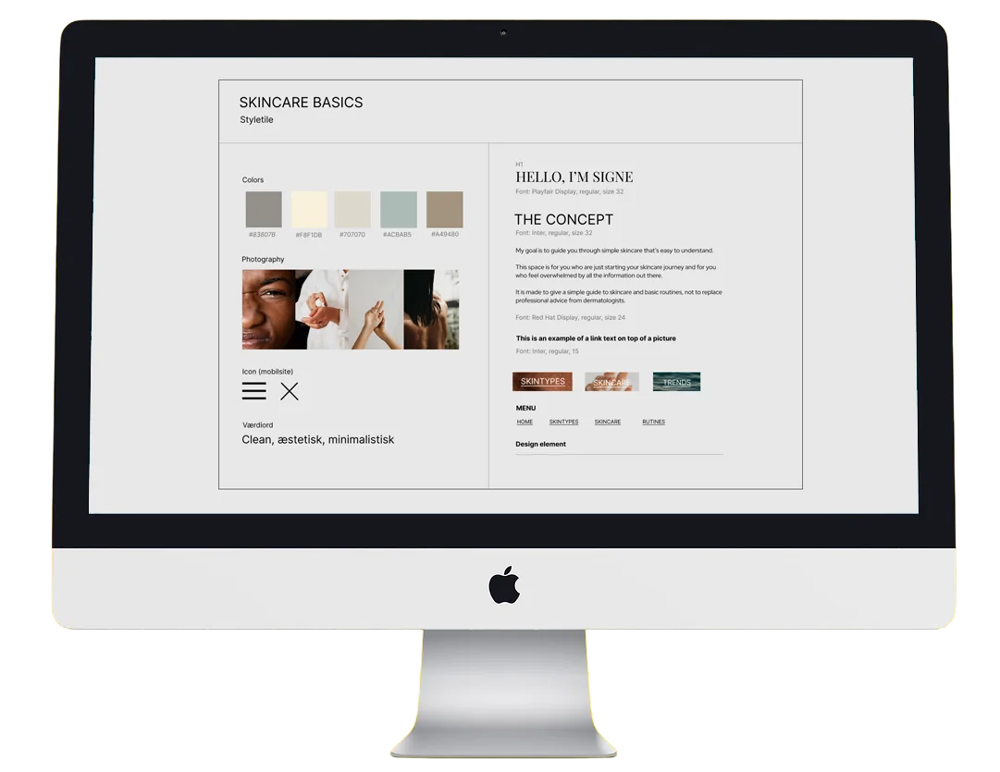
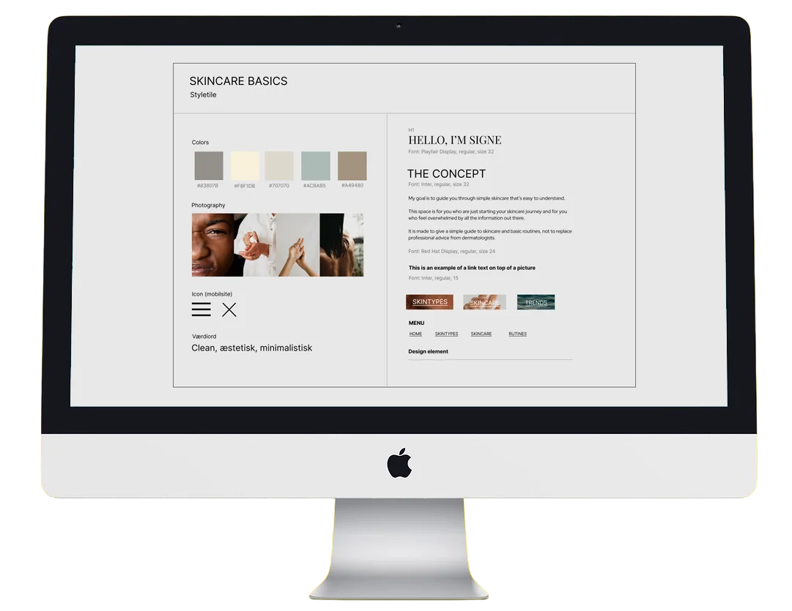

Projektløsning
Fra idé til færdig hjemmeside
I temaet Grundlæggende UX/UI arbejdede vi med at planlægge og kode et emnesite om et selvvalgt emne. Opgaven tog udgangspunkt i en iterativ designproces, som omfattede research, idéudvikling og prototyping i Figma.
Vi blev introduceret til arbejdet med brugervenlighed gennem blandt andet målgruppeanalyse og user stories samt metoder som sketching, wireframes, moodboards og styletiles. Derudover blev vi præsenteret for forskellige usability tests, herunder tænke-højt-test, 5-sekunders-test og Lighthouse-test, som anvendes til at evaluere brugeroplevelse, forståelse og teknisk performance.
Med udgangspunkt i en prototype skulle hjemmesiden efterfølgende kodes i HTML og CSS. Som en del af temaet arbejdede vi også med at producere og tilpasse tekst og billeder til web samt med at vælge farver, typografi og visuelle elementer, der understøtter et sammenhængende og brugervenligt design. Derudover blev vi introduceret til GitHub som værktøj til versionsstyring i udviklingsprocessen. xyz
 
